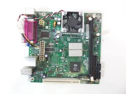

Düşük güç tüketimi ve kompakt tasarımıyla temel bilgisayar ihtiyaçları için geliştirilmiş anakart.
| Özellik | Değer |
|---|---|
| Soket / CPU | Entegre Intel Celeron 220 (1.2 GHz) |
| Chipset | SiS 662 + SiS 964L |
| RAM | 2x DDR2 DIMM Slot (4GB’a kadar) |
| PCI | 1x PCI Slot |